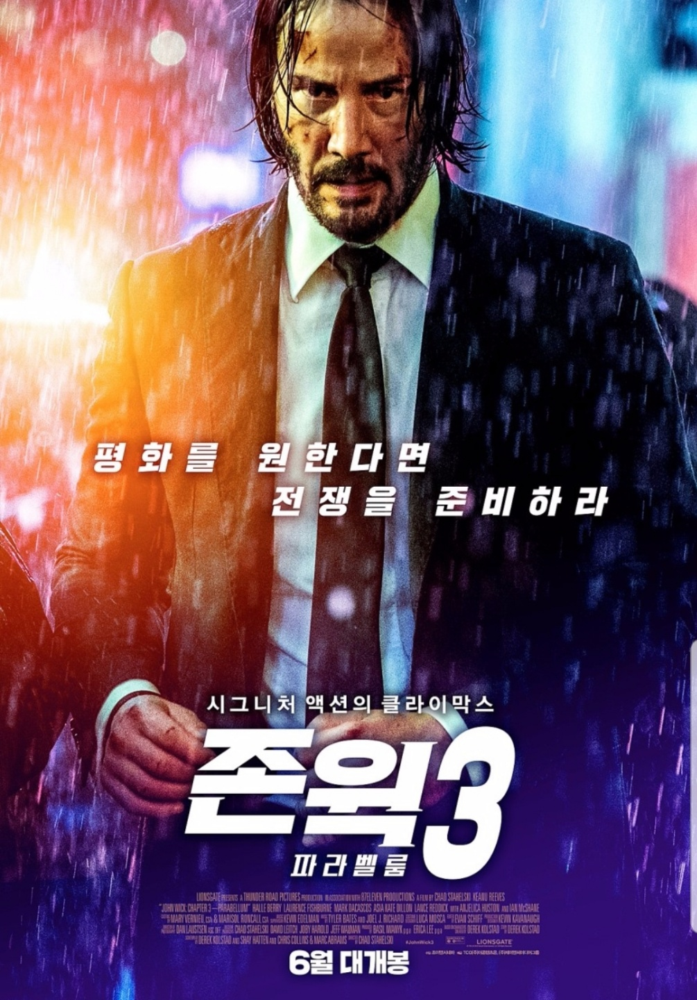
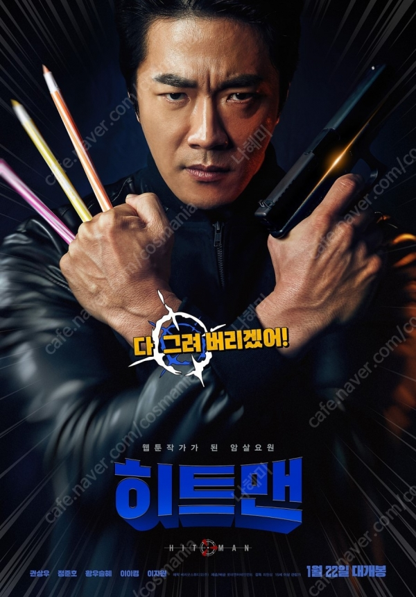

최근 본 영화

1.존 윅3 : 파라벨룸
영화 소개: 평화를 원한다면 전쟁을 준비하라!
현상금 1,400만 달러!, 전 세계 킬러들이 노리는 단 하나의 타깃
업계 레전드 킬러 ‘존 윅’은 국제암살자연합을 통해 파문조치를 당한 후
그에게 따라 붙은 역대 최고의 현상금 1,400만 불로 인해 전 세계의 가장 위협적인 킬러들이 그와의 전쟁을 선포한다.
본 소감 :존윅 시리즈를 좋아해서
생각보다 잔인하긴 햇지만 재밌게 잘봐앗

2.위대한 쇼맨
영화소개
쇼 비즈니스의 창시자이자, 꿈의 무대로 전세계를 매료시킨 남자
‘바넘’의 이야기에서 영감을 받아 탄생한 오리지널 뮤지컬 영화 <위대한 쇼맨>.
<레미제라블> 이후 다시 뮤지컬 영화로 돌아온 휴 잭맨부터 잭 에프론, 미셸 윌리엄스,
레베카 퍼거슨, 젠다야까지
할리우드 최고의 배우들이 합류해 환상적인 앙상블을 선보인다.
여기에 <미녀와 야수> 제작진과 <라라랜드> 작사팀의 합류로
더욱 풍성해진 비주얼과 스토리, 음악까지 선보일 <위대한 쇼맨>은
‘우리는 누구나 특별하다’는 메시지로 관객들에게 재미는 물론, 감동까지 선사할 것이다.
THIS IS ME! 우리는 누구나 특별하다!
본 소감
재밌었고 무엇보다 노래가 좋았었다.

3.히트맨
영화 소개
웹툰 작가 되고 싶어 국정원을 탈출한 비밀 프로젝트 방패연 출신 전설의 암살요원 '준'.
그러나 현실은 연재하는 작품마 역대급 악플만 받을 뿐이다.
술김에 그리지 말아야 할 1급 기밀을 그려버리고 예상치 않게 웹툰은 하루 아침에 초대박이 나지만,
그로 인해 '준'은 국정원과 테러리스트의 더블 타깃이 되는데... 웹툰 작가가 된 전설의 암살요원,
그의 히트 본능이 깨어난다!
본 소감
아무생각없이 볼 수 있어서 좋았고 영화 보면서 많이 웃엇던 기억이 난다